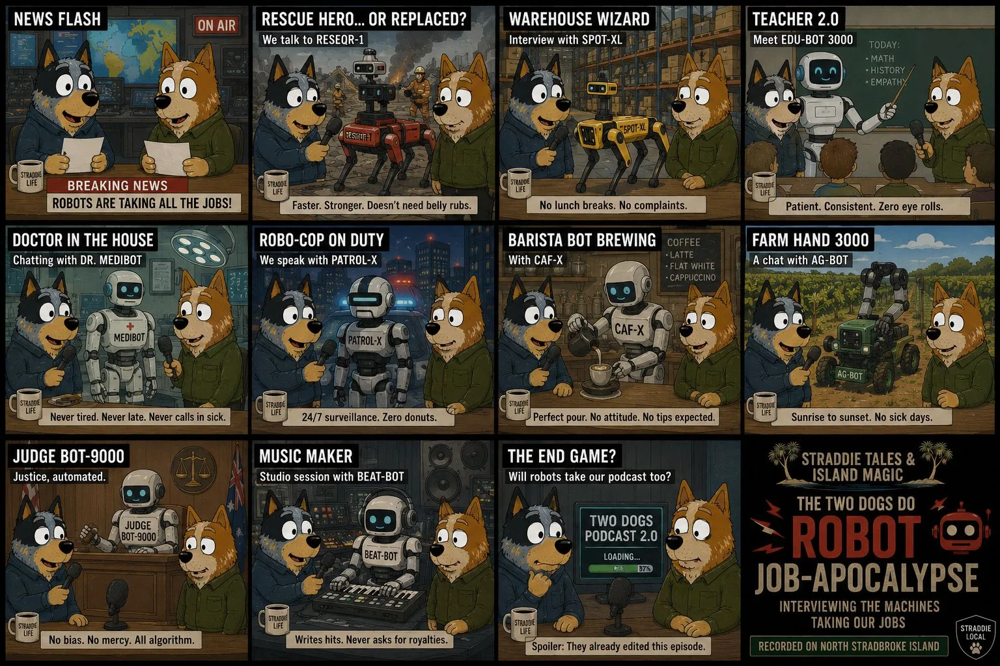

Start with Dog News, Weather Window, Good Dog or Bad Dog if the day has a clear doorway.
The star shelf
Show rhythm for serious, silly and surprisingly useful detours.
These bits give the show somewhere to move when a topic needs a jolt, a breather, a source check, a laugh, a warning, a win or a small doorway back to dog logic.
Nothing here decides the show in advance. It is a shelf of possible moves for two mates trying to understand civilisation without pretending the answer is already in the notes.

Topic boards
Some bits are quick stings. Some can carry a whole run.


Scene menu
Pick the bit that gives the yarn a new angle.
CurrentNews Flash
What happened, why it matters, and what might be worth keeping an eye on.
Open form ComedyComedy MinuteOne quick joke, visual gag or absurd plain-English translation before the dense idea returns.
Open form AccountabilityBad DogCorruption, bad choices, avoidable accidents, risky moves and poor process, handled with careful sourcing.
Open form WinsGood DogGood news, achievements, community care, useful inventions and people giving life a fair go.
Open form CalendarUN World Day Of WhateverAn official observance becomes a doorway into the episode, once checked against the UN list.
Open form SportSports DeskScores, clubs, rivalries, community health and what the game teaches about people.
Open form IslandWeather WindowStorms, heat, tides, ferry mood, outdoor screenings and humility from the sky.
Open form SoundMusic DropTheme-song cues, local tracks, release memory, guest songs and soundtrack beds.
Open form ScreenFilm ClubFilms, shorts, animation tests, outdoor cinema and the question: what would this look like as a scene?
Open form VisualArt ShowExhibitions, posters, murals, props and visual ideas that make the topic easier to feel.
Open form PlayGames TableTabletop ideas, public ledger games, simulation toys and playful decision tests.
Open form Odd skiesDogs And AliensSci-fi creatures, UAP headlines, space news and intergalactic dog-ally jokes.
Open form EvidenceScience Sniff TestWhat is the claim, what is the evidence, and what is better left alone until checked?
Open form UsefulLife HackOne practical tip in words we understand: scams, gadgets, forms, repairs or everyday AI use.
Open form Front doorOnboardingHow the show works, how guests choose animals, and how people can join without feeling silly.
Open form SupportMerch TableShirts, stickers, posters, digital support bundles and joke products that can stay grounded.
Open form CommunityDogs And AlliesShout-outs, helpers, guests, builders, clubs and allies, with consent before naming people.
Open form ReferencesFamous DogsReal dogs, screen dogs and working dogs as truthful segues and highlights.
Open page RitualsDog RitualsHabits, observations and animal logic that can make human rituals look new again.
Open pageSimple run sheet
Let the scenes behave like a rhythm section.
Drop Comedy Minute, Life Hack, Music Drop or Science Sniff Test when the topic gets too dense.
Finish with Good Dog, Dogs And Allies, Onboarding or a simple next useful action.